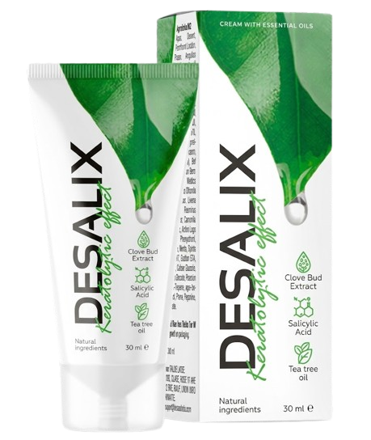

⭐ Doporučeno odborníky
Zbavte se plísně nehtů rychle a jednoduše
Přírodní krém, který pomáhá obnovit zdravý vzhled nehtů a pokožky chodidel.
Pomáhá zlepšit stav napadených nehtů
Redukuje zápach a podráždění
Podporuje regeneraci pokožky

✔ 60denní garance vrácení peněz
✔ Rychlé doručení po EU (3–5 dnů)
✔ Vyvinuto a testováno v EU
Objednejte nyní a zaplaťte až při převzetí